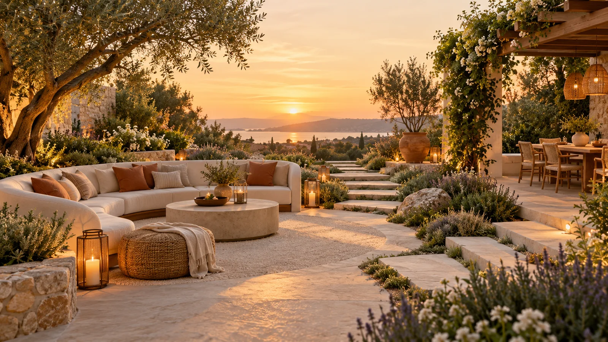

Leave room to move
Keep clear routes around furniture and doorways.

Terravelle Outdoor Living
Explore 18 original outdoor settings, from small balconies to generous garden terraces.
Browse by space
A fresh perspective
18 spaces

The Terravelle perspective
A generous dining table anchors this stone terrace. Low lounge seating creates a second zone, while planters bring softness without overwhelming the architecture.
Natural textures. Useful details. Room to slow down. Every choice begins with the way you want to live outdoors.
Plan your own spaceOutdoor styling tips
Keep clear routes around furniture and doorways.
Combine wood, woven surfaces, and soft outdoor textiles.
Use a mix of table lanterns and practical lighting.
Frame seating with planters suited to your light and climate.
A little closer to your perfect outdoors
Bring measurements, photographs, and ideas to a showroom consultation.